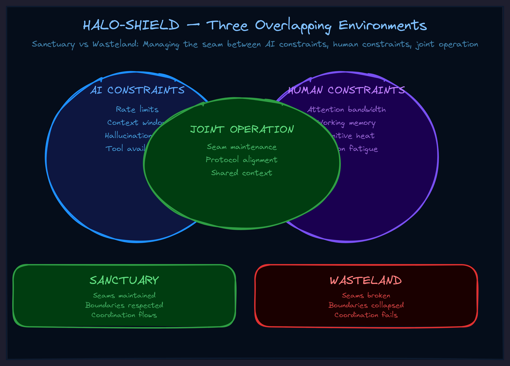

May 2026Drift & repairThe operator
HALO: Why Your AI Collaboration Keeps Falling Apart
The problem is not the AI. It is not the prompt. It is the invisible seam between your context and the machine's context — and nobody is maintaining it.

The Frustration Everyone Recognizes
You start a session with your AI copilot. The first exchange is great. The second is decent. By the fifth, something has drifted. The AI is producing outputs that look right but feel wrong. You correct it. It nods and does something slightly different but still off-axis. By the tenth exchange, you are re-explaining things you already said. By the fifteenth, you are doing the work yourself.
This is not a model quality problem. GPT-4, Claude, Gemini — they all do it. They all drift. The better question is: why does every AI collaboration degrade over time?
The answer is structural.
Three Overlapping Extreme Environments
When you work with an AI, three extreme environments operate simultaneously:
Environment 1: The AI's constraints. Attention limits. Context windows. Stochastic outputs. Tendency to drift or hallucinate. The AI is not operating in a comfortable, stable space — it is navigating genuine complexity under real constraints. Its "memory" is a fixed window. Its "understanding" is statistical pattern matching under pressure.
Environment 2: Your constraints. Limited time. Competing demands. Cognitive load from everything else in your life. Emotional state. You are also not operating in a comfortable, stable space. You are trying to extract value from this collaboration while managing everything else.
Environment 3: The joint operation. Whatever you are trying to accomplish together has its own complexity — coordination demands, precision requirements, stakes of getting it wrong. The collaboration itself is an extreme environment.
Three environments. All overlapping. All interacting. And nobody is managing the interaction.
That is the structural cause of drift.
HALO: Human-AI Linked Operations
HALO is the operational discipline for making human-AI collaboration actually work rather than theoretically possible.
The name matters. Not "human-assisted AI." Not "AI-assisted human." Linked operations. Both sides are active participants with their own capabilities, constraints, and responsibilities. Neither can accomplish the joint mission alone. The linking is what makes them a unit rather than two separate entities occasionally exchanging information.
And the key concept in HALO is the seam.
The Tailoring Analogy
In tailoring, the seam is where two pieces of fabric are joined to create a garment. The seam is where the skill is. Anyone can cut fabric. Anyone can buy thread. But the seam — the joining line where two pieces become one — that requires precision, attention, and the ability to maintain tension without tearing.
A bad seam falls apart under stress. A good seam holds even when the garment is stretched, pulled, worn daily.
In human-AI collaboration, the seam is where your context (goals, knowledge, constraints, strategic vision) meets the AI's context (attention, capabilities, training, execution capacity). When the seam is maintained, the collaboration produces outputs that neither side could produce alone. When the seam fails, the collaboration falls apart into confusion and missed handoffs.
The seam does not maintain itself.
Who Maintains the Seam?
Both sides. But mostly the AI's job while running — because the AI is the one actively processing during the collaboration. It must track context, remember goals, notice when alignment is drifting, and signal when repair is needed.
The human's job is to respond to those signals and provide course corrections. To use explicit signals: "Hold on." "Wait." "That changes things." "Let me restate what I'm trying to accomplish."
These are not conversational filler. They are seam maintenance operations that keep the collaboration coherent.
When you skip seam maintenance, you get drift. When you do seam maintenance, you get forward-chaining collaboration where each step enables the next. That is the difference between spending an hour producing something valuable and spending an hour cleaning up confusion.
HALO-SHIELD: The Full Doctrine
HALO handles the linking. But linking discipline alone is not enough. The full doctrine is HALO-SHIELD — three components that cannot be separated:
HALO — Human-AI Linked Operations
The operational linking between human and AI contexts through the seam. How you coordinate. How you signal. How you maintain alignment.
SOSEEH — System of Systems Extreme Environment Handling
The systems understanding required to navigate complexity. You model the collaboration as vehicle + pilot + support systems with defined interaction loops. This gives you the mental model for why things are hard and what each side needs to do.
HIEL — Heat-Informed Energy Ligation
The management of AI stochasticity. The randomness in AI outputs is not noise — it is energy. Sometimes you want high heat (exploration, multiple perspectives, creative generation). Sometimes you want low heat (precision, adherence to established patterns, verification). HIEL is the practice of channeling that energy rather than fighting it.
The Shield Effect
Together, these three create what we call the blanket membrane — a protective boundary around your collaborative space. Inside the membrane, you have what we call sanctuary: you forward-chain toward deliverables. Each step enables the next. The only "emergency" is that you succeeded and now need to do what comes after.
Outside the membrane — in what we call wasteland — you backward-chain through chaos. You constantly clean up, repair, correct, re-derive. Every step creates more work instead of less. This is what most AI collaboration feels like, and it is not inevitable. It is what happens when nobody maintains the seam.
In a sanctuary, outputs converge toward goals. In a wasteland, outputs diverge into increased complexity. HALO-SHIELD is the doctrine for staying in sanctuary.
The Practical Test
This is not abstract theory. Here is how you test it right now.
Next time you start a complex AI collaboration session — not a one-shot query, but something that requires multiple exchanges — do three things differently:
1. Map the three environments. Before you start, write down: What are my constraints right now? What are the AI's constraints? What makes this task complex enough that coordination matters? Making these explicit changes how you approach difficulties.
2. Set the seam explicitly. Tell the AI what you are trying to accomplish, what success looks like, and what you need from it. Do not assume it will figure this out from context. State it. This is initial seam-setting.
3. Maintain the seam throughout. Use explicit signals when your state changes. Ask the AI to flag drift. Periodically check alignment: "Are we still on track?" If the answer diverges from your understanding, you caught drift early. Repair it before it compounds.
If HALO works, you should notice a qualitative shift. Less effort spent on correction. Earlier detection of misalignment. Outputs that actually move toward what you want. The collaboration should feel less like fighting a tool and more like running a joint operation.
The Deeper Insight
HALO-SHIELD is not just an operating manual for AI collaboration. It is a framework for how two different kinds of intelligence create a unified intelligence that neither could be alone.
Most people think about AI as a tool they use. A few think about AI as an autonomous agent they deploy. HALO represents a third category: linked operations where both sides are active participants, both sides have constraints, and the quality of the collaboration depends entirely on whether someone is maintaining the seam.
The organizations that figure this out first will have a compounding advantage. Not because they have better AI — everyone has access to the same models. But because they understand the operational discipline of human-AI linking. Their people will produce more per session. Their agents will stay coherent longer. Their output quality will be higher per token spent.
The seam is where the skill is. The question is whether you are maintaining it or ignoring it.
Go Deeper
HALO and HALO-SHIELD are part of the TWI framework library — a set of operational frameworks for organizations navigating AI transformation. Each framework emerged from real collaborative sessions and encodes a specific discipline.
Explore the full framework library →
Want to apply these frameworks to your organization? We work directly with leadership teams to implement AI collaboration doctrine that compounds.